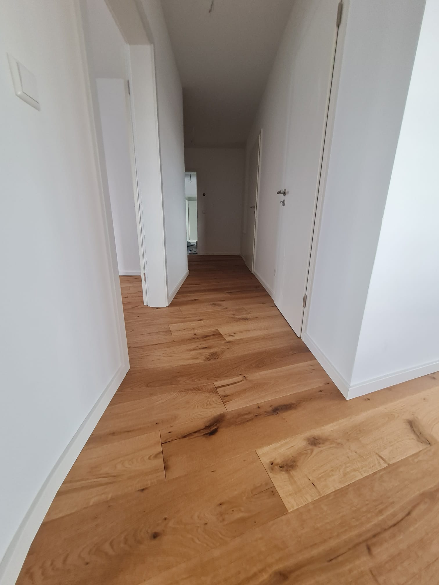

Rustikaler Kiefernboden
Eine charmante rustikale Kiefernboden-Installation, die diesem Landhaus Wärme und Charakter verleiht. Mit recyceltem Kiefernholz haben wir einen Boden mit authentischem Vintage-Charme geschaffen und dabei moderne Haltbarkeit gewährleistet.
Projektspezifikationen
- Material: Recyceltes Kiefernholz
- Muster: Dielen in verschiedenen Breiten
- Oberfläche: Handgehobelt mit Vintage-Patina
- Fläche: 75 m²
- Dauer: 12 Tage
Projektgalerie

Komplette Raumansicht mit rustikalem Charakter

Detail der handgehobelten Textur und Patina

Sorgfältige Auswahl und Platzierung der recycelten Dielen
Natürliche Charaktermerkmale und Vintage-Erscheinung
Projektablauf
- Auswahl der recycelten Kieferndielen
- Sorgfältige Reinigung und Materialvorbereitung
- Untergrundprüfung und Verstärkung
- Layoutplanung für verschiedene Dielenbreiten
- Handhobeln und Strukturierung
- Installation mit traditionellen Techniken
- Spezielle Alterung und Patina-Auftrag
- Schutzversiegelung
- Finale Alterungsdetails und Inspektion
Interesse an einem ähnlichen Projekt?
Kontaktieren Sie uns für ein unverbindliches Beratungsgespräch und ein kostenloses Angebot.
Kostenloses Angebot